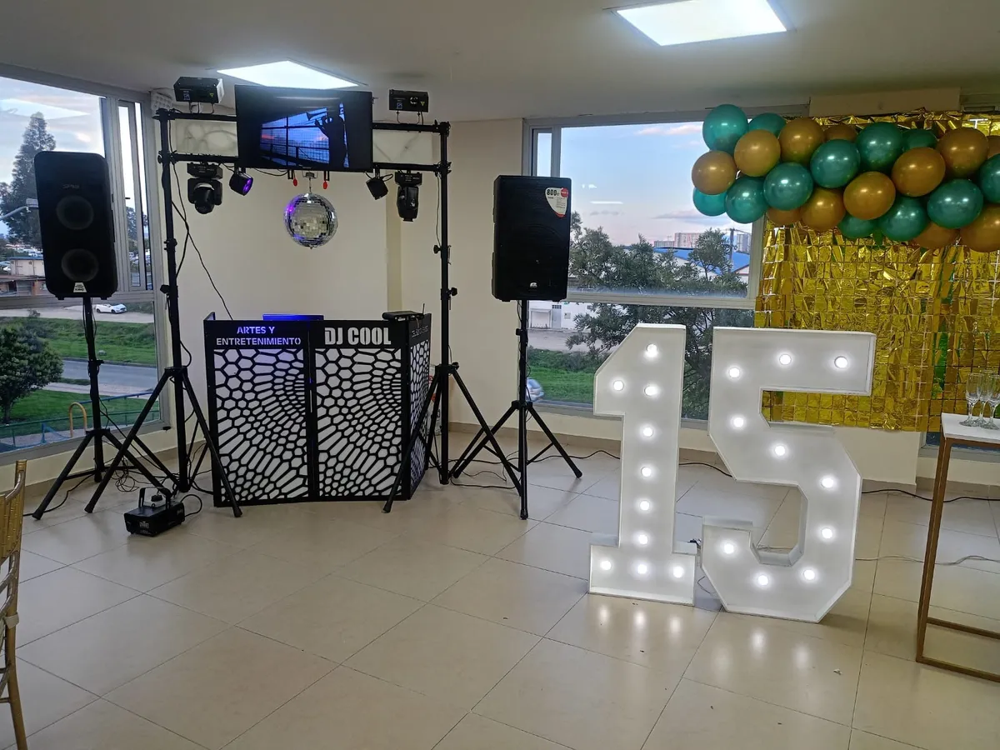

DJ para bodas en Bogotá
Sonido profesional, iluminación ambiental y repertorio musical coordinado para cada instante de su matrimonio.
Coordinación musical paso a paso
Cada fase de la boda cuenta con una atmósfera sonora diseñada con antelación.
Entrada y votos solemnes
Microfonía inalámbrica para los novios y el oficiante, con música instrumental suave y sin interrupciones.
Cóctel y cena ambiental
Repertorio elegante a volumen moderado que permite la conversación fluida entre los invitados.
Primer baile y brindis
Vals nupcial o canción personalizada con iluminación enfocada y efectos de chisperos fríos si se requieren.
Rumba crossover
Lectura de pista para integrar a todas las generaciones con una transición natural hacia la fiesta principal.
Preguntas frecuentes
Sí, realizamos una planeación previa para conocer sus temas preferidos, canciones especiales y géneros que prefieran evitar.
Sí, cubrimos haciendas y espacios campestres en Chía, Cajicá, Sopó, Cota, Tenjo, Tabio y La Calera con logística completa.